Le vélo tracteur à l'avant, le Lime derrière. La roue avant du Lime est soulevée et posée dans le berceau (les deux joues). La barre de blocage relie la selle et le guidon du Lime pour garder sa direction droite.
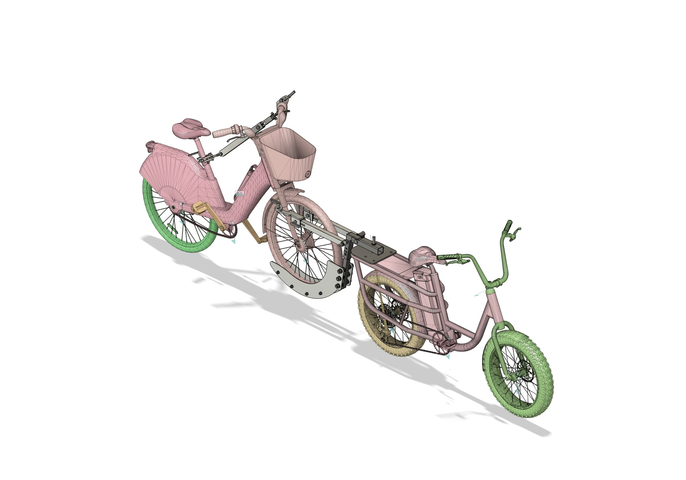
La pièce tourne toute seule. Faites-la tourner au doigt ou à la souris, zoomez avec deux doigts ou la molette. Le curseur écarte les pièces.
Chargement de la 3D…
Touchez une vue pour l'agrandir.
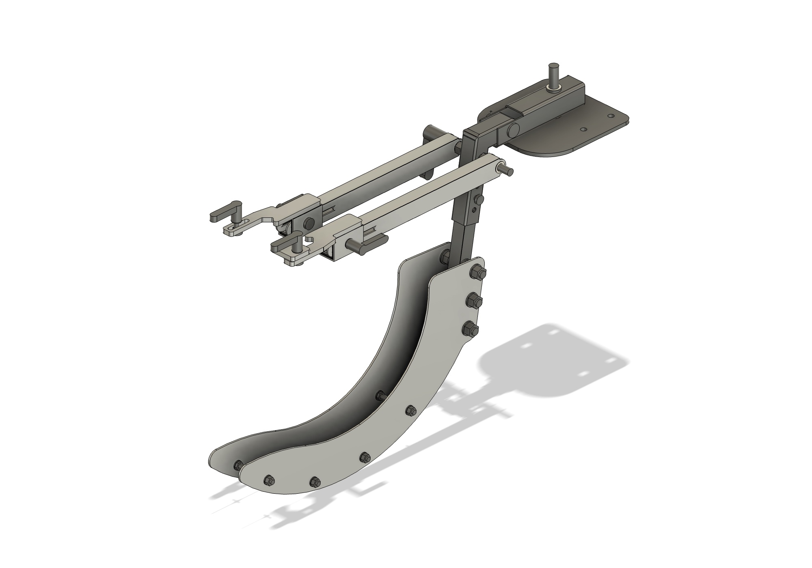
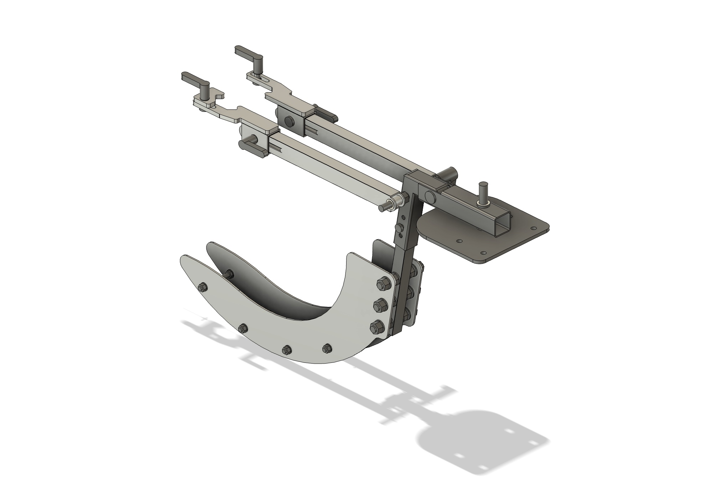
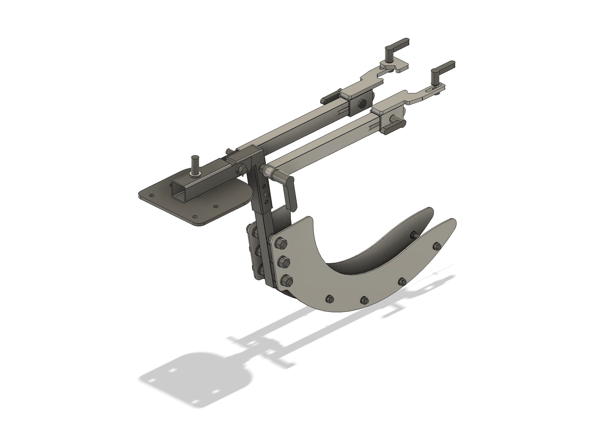
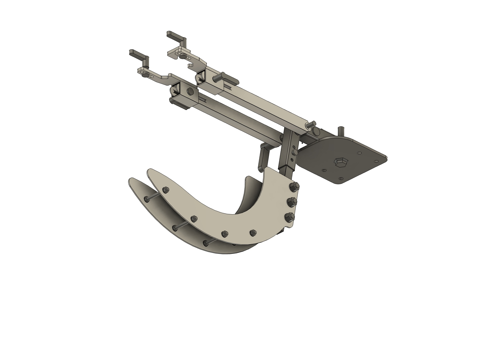
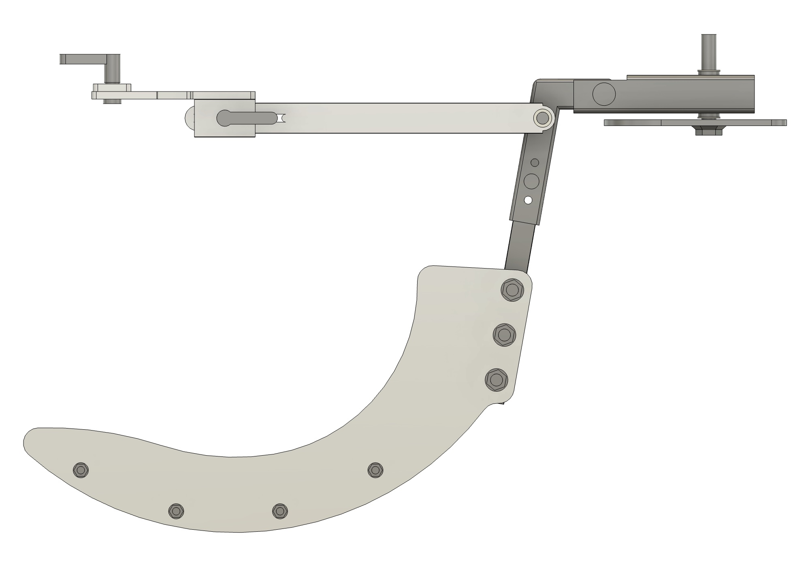
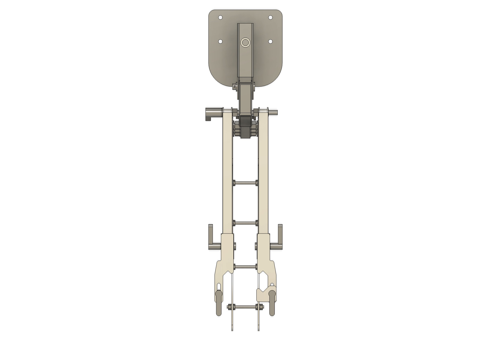
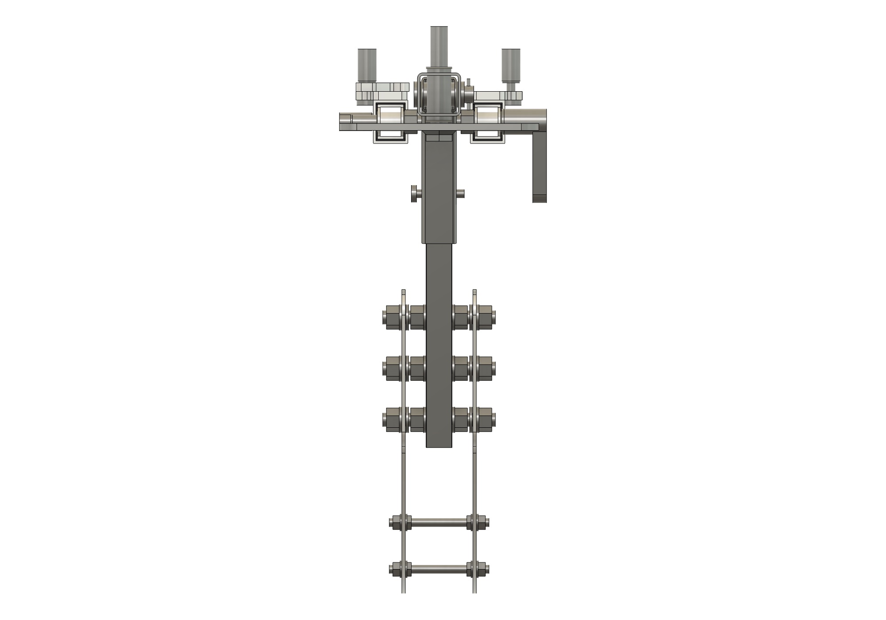
Chaque sous-ensemble est écarté de sa place de montage pour montrer comment les pièces s'emboîtent. Les tiges filetées restent avec leurs écrous.
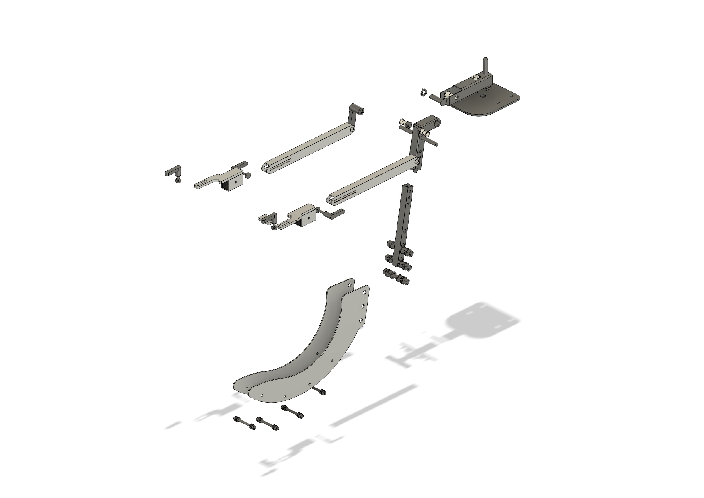
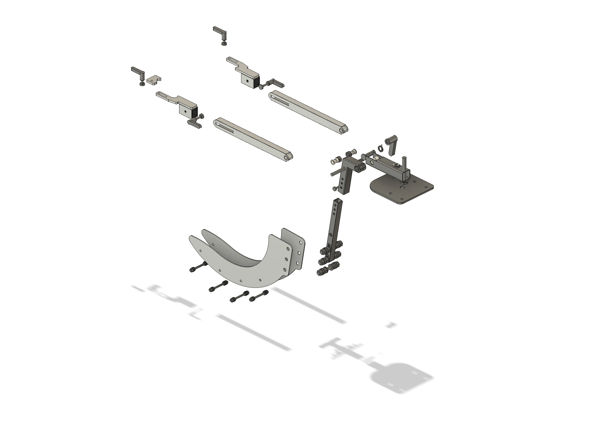
Télescopique de 500 à 900 mm, mâchoires en V sur la tige de selle (Ø25 à 35) et sur la poignée (Ø22 à 40).
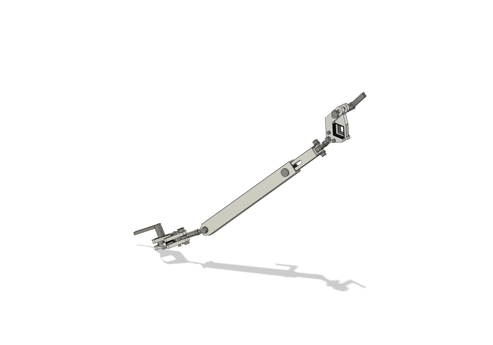
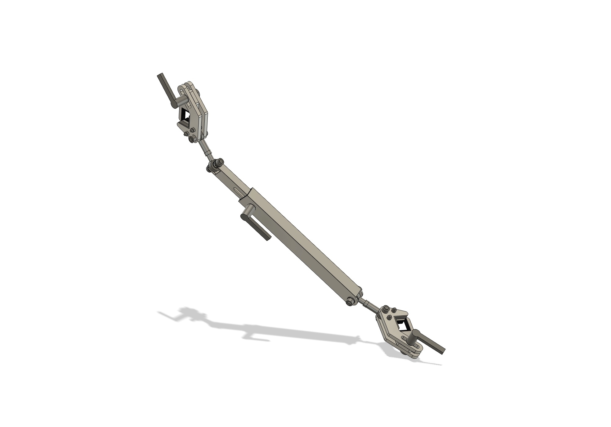
Découpe laser (tôle et tube), plis et soudures. Les cotes sont l'encombrement de chaque pièce.
| Pièce | Matière | Encombrement | Procédé | Qté |
|---|---|---|---|---|
| Platine porte-bagages (PB) | Tôle acier 8 mm | 240 × 230 | laser tôle | 1 |
| Tube de lacet + fourreau 28×2,5 L60 soudé | Tube acier 50×50×3 | L 238 | laser tube soudure | 1 |
| Coude de tangage : barre droite encochée V80, pliée et soudée ; fourreau 28×2,5 L40 et tige M16 L200 soudés | Tube acier 40×40×2 | barre droite 295,7 | laser tube pli soudure | 1 |
| Patins du coude, collés | POM 3 mm | 47 × 31 / 44 × 24 | découpe | 4 |
| Tube de réglage | Alu 6060 T66 30×30×3 | L 340 | laser tube | 1 |
| Joues du berceau de roue (gauche + droite) | Alu 5083 H111 4 mm | 669 × 351 | laser tôle | 2 |
| Mâchoires fixes coulissantes (G + D) | Alu 5754 H111 10 mm | 215 × 59 | laser tôle | 2 |
| Coulisseaux des mâchoires | Alu 6060 T66 50×40×3 | L 80 | laser tube | 2 |
| Patins des coulisseaux, collés | POM 2 mm | 80 × 34 / 80 × 40 | découpe | 8 |
| Bras de fourche | Alu 6060 T66 40×30×3 | L 487 | laser tube | 2 |
| Fourreaux de pivot des bras | Alu rond 22×2 | L 30 | coupe | 2 |
| Barre de blocage v24 | ||||
| Tube B, côté selle | Alu 6060 T66 40×30×3 | L 380 | laser tube | 1 |
| Tube C, côté poignée (chape découpée dans le tube) | Alu 6060 T66 30×20×3 | L 375 | laser tube | 1 |
| Patins du télescope, collés | POM 2 mm | 60 × 30 / 60 × 24 | découpe | 4 |
| Mâchoires fixes du bas (selle + poignée) | Alu 5754 H111 10 mm | 138 × 90 | laser tôle | 2 |
| Mâchoires fixes du haut (selle + poignée) | Alu 5754 H111 10 mm | 138 × 90 | laser tôle | 2 |
| Mâchoires mobiles (selle + poignée) | Alu 5754 H111 10 mm | 85 × 54 | laser tôle | 2 |
| Garnitures des V, collées | Caoutchouc 3 mm | 54 × 27 | découpe | 6 |
| Pièce | Référence | Qté |
|---|---|---|
| Bagues lisses (lacet + tangage) | igus GFM-2023-21 | 4 |
| Bagues lisses (pivots des bras) | igus GFM-1618-12 | 4 |
| Axe de tangage + rondelle + goupille | ISO 2341 B 20×65, ISO 8738 Ø20, ISO 1234 4×36 | 1 |
| Boulon de lacet | M20 | 1 |
| Manettes indexables M10 | Kipp K0269.310 | 7 |
| Manette indexable M16 (serrage des bras) | Kipp K0269.516 | 1 |
| Broche à billes de réglage | Ø10, tige L55 | 1 |
| Écrous de réglage | M16 ISO 4032 | 2 |
| Tiges filetées du berceau + 2 écrous et 4 rondelles par côté | M16 DIN 976 L130 | 3 |
| Tiges filetées d'appui de roue + écrous et contre-écrous | M10 DIN 976 L115 | 4 |
| Embouts à rotule femelles | SI10E M10 | 2 |
| Embouts à rotule mâles + contre-écrou | SA10T/K M10 | 2 |
| Vis à tête bombée collet carré | DIN 603 M10 (L35 ×2, L45 ×3, L55 ×2) | 7 |
| Vis CHC + écrous frein (chapes, tôles fixes) | ISO 4762 M10×40/45, M6×40 ; ISO 7040 | — |